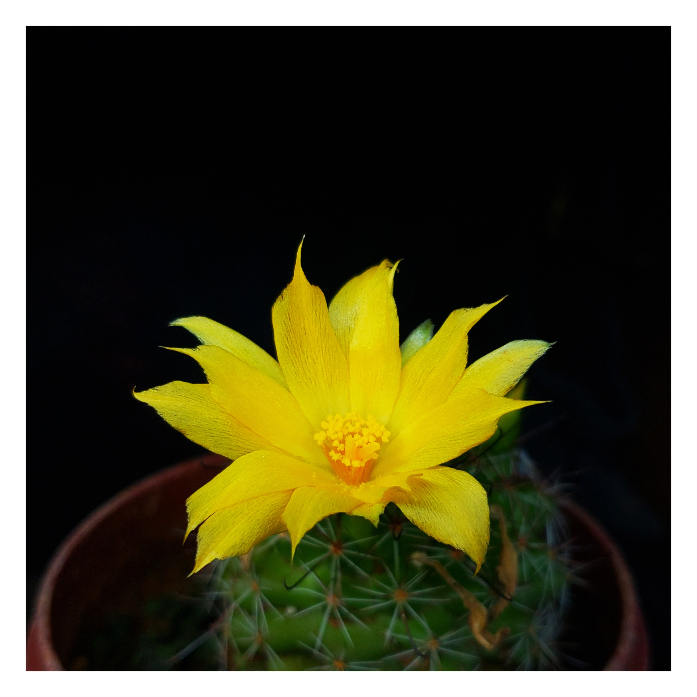

Cactus amarillo

Estas son algunas de las caracteristicas de la imagen
-
Cactus: Es de color verde con pequeñas espinas, contenido en una maceta.
-
Flor Amarilla: La flor es el foco principal de la imagen, con pétalos largos y puntiagudos y un centro naranja suave.
-
Contraste Visual: La iluminación resalta los colores vibrantes de la flor contra un fondo oscuro, creando un contraste atractivo.